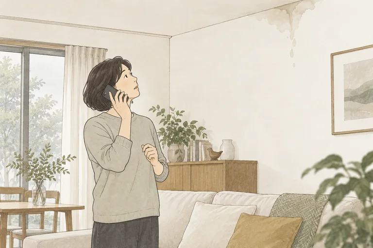
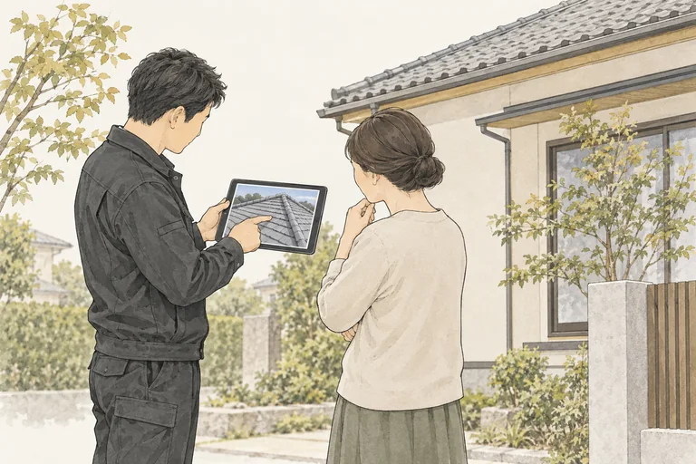
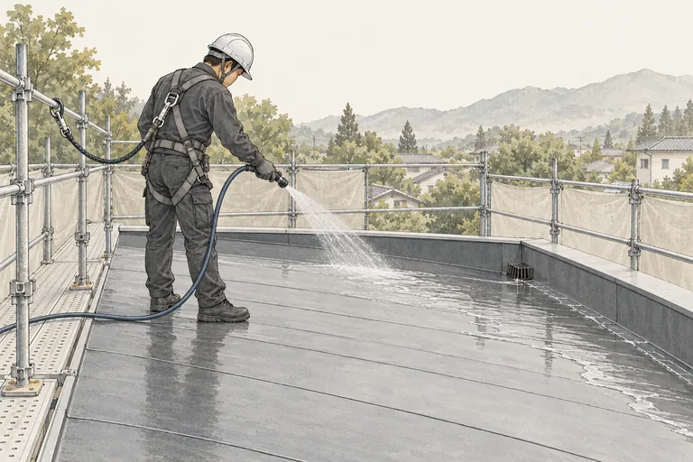
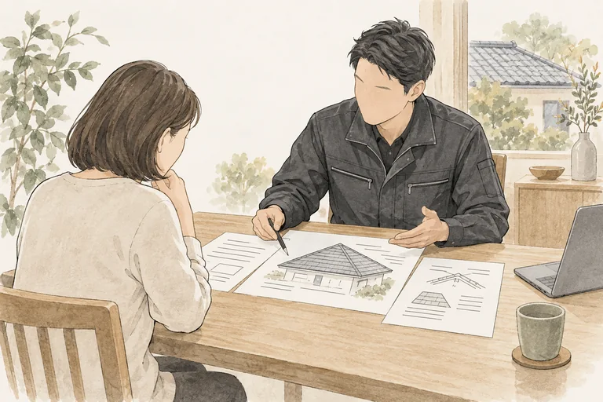
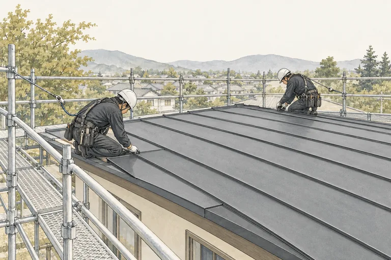
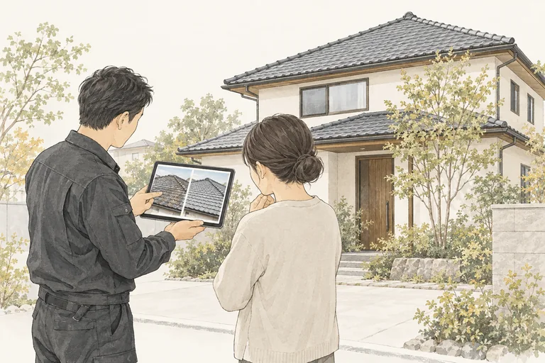
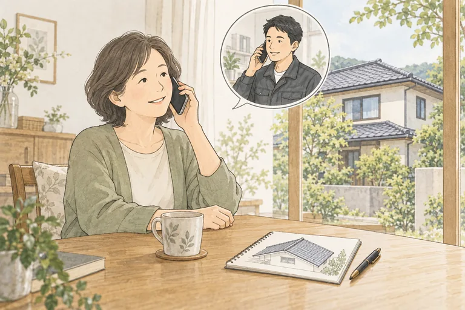

RAIN LEAK SUPPORT
もし雨漏りがしたら
雨漏りのご相談から現地確認・散水調査、お見積もり、施工、工事後のご相談まで。大沼商会の対応の流れをご案内します。
CONSULTATION & CARE
ご相談から、工事後まで。
各工程の画像は、対応の流れをお伝えするイメージイラストです。
- 01
ご相談
まず、状況をお聞かせください
電話またはお問い合わせフォームで、雨漏りしている場所や、いつ・どのようなときに起きるかを伺います。建物の所在地と、気になる状況をお聞かせください。

- 02
現地確認・写真でのご説明
現地で確認し、状態を共有します
現地に伺い、雨漏りの状況や屋根などの状態を確認して写真を撮影します。撮影した写真をお客様にもお見せし、現在の状態をご説明します。

- 03
散水調査
水を流して、原因を調べます
屋根に水を流す散水調査で雨漏りの状況を確認し、水が入る箇所や原因をできる限り特定します。水の通り道は複雑なため、調査をしても原因を特定できない場合があります。

- 04
工事内容・お見積もりのご提案
調査結果をもとに、ご提案します
現地で確認した状態と散水調査の結果を踏まえ、工事内容とお見積もりをご提案します。分かったことと、特定できていないことも含めてご説明します。

- 05
ご納得いただいてから施工
内容をご確認いただき、工事へ
ご提案した工事内容とお見積もりをご確認ください。気になる点をご相談いただき、内容にご納得いただいてから施工します。

- 06
施工後のご報告
工事の内容と仕上がりをご報告します
施工後は、行った工事の内容と仕上がりをご報告します。ご不明な点や気になることがあれば、お聞かせください。

- 07
工事後のご相談
気になることは、工事後も
工事が終わった後も、気になる点があれば大沼商会へご相談ください。お話を伺い、状況を確認します。
